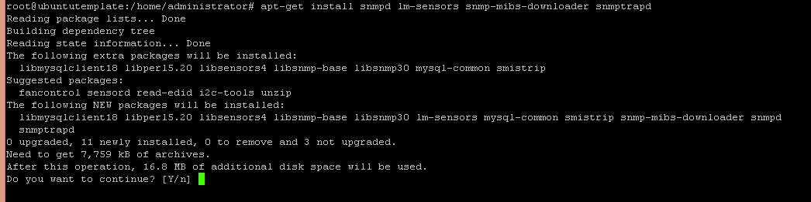
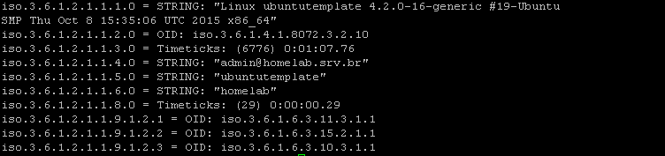

Instalação e configuração SNMP Linux Ubuntu
BlogCompartilhe esse post nas redes sociais...
Olá Homelabers!!!
Nesse post, vou mostrar como se configura o serviço SNMP no Linux Ubuntu Server.
Antes de mais nada, vou responder a quem vive me perguntando (e criticando): Porque você só posta “coisas” do Ubuntu?
Vamos lá:
1.
2.
3.
4.
Pronto, mas se vocês meus caros amigos e leitores quiserem que eu poste aqui como fazer “as coisas” tanto no Ubunto como no CentOS, perfeito, eu farei - deixe o seu comentário no blog :) ) Caso contrário… vou continuar no meu querido Ubuntu.
Agora chega de chorumelas e vamos ao post.
O SNMP é um protocolo da pilha TCP (porta UDP 161) que é responsável pelo gerenciamento de dispositivos de rede. SNMP significa Single Network Manage Protocol ou Protocolo Simples de Gerenciamento de Rede em português.
Ele é amplamente utilizado por ferramentas de monitoração como o Cacti, Nagios, Zabbix, OpManager e outros - listados no post anterior.
Não vou me alongar aqui nesse post a falar sobre como o SNMP funciona, etc (mas prometo falar em outro post), mas sim em como realizar a sua instalação e configuração no ambiente Linux Ubuntu.
Então vamos lá:
Acesse o seu servidor Linux Ubuntu já instalado (ver outro posto sobre a instalação do Ubuntu) como root ( )
Digite o comando para instalar o SNMP:
apt-get install snmp snmpd lm-sensors snmp-mibs-downloader snmptrapd

Após a instalação, o próximo passo é fazer uma cópia do arquivo de configuração do SNMP utilizando o comando abaico:
mv /etc/snmp/snmpd.conf /etc/snmp/snmpd.conf.ori
Após isso, vamos editar o arquivo snmpd.conf e colocar as configurações necessárias.
nano /etc/snmp/snmpd.conf
Aqui você deve copiar e colar as informções abaixo.
view all included .1
rocommunity homelab #nome da community
sysLocation homelab #local do equipamento
sysContact admin@homelab.srv.br #email de contato do equipamento
Salve o arquivo (no nano CTRL+X e Y para salvar) e reinicie o serviço SNMP.
service snmpd restart
Pronto! O serviço SNMP está instalado e configurado. Agora vamos fazer o teste. Execute o comando abaixo:
snmpwalk -v2c localhost -c homelab .1

O resultado deverá ser parecido com a tela acima.
Prontinho… o SNMP está instalado, configurado e testado no seu sistema.
Agora que você já sabe configurar o serviço SNMP em seus hosts Linux Ubuntu, você já pode correr atrás e instalar um sistema de monitoração com os citados no post anterior.
Mas se você ainda não se sente confortável em arriscar a instalação de uma das ferramentas postadas no útimo post, aguarde que eu vou fazer um post para cada ferramenta (ou as mais famosas ok?).
É isso meus amigos, fico aqui com mais um “tutorial” e não se esqueçam de deixar o seu comentário no post, seguir o HomeLaber no Twitter (@Homelaber) e curtir a nossa página no Facebook (fb.com/homelaber) para ficar sempre atualizado das novidades do blog.
[caption id=“attachment_905” align=“aligncenter” width=“600”] Deixe o seu joinha!!![/caption]
Compartilhe esse post nas redes sociais...Valdecir Carvalho
Nerd e pai orgulhoso da Mariana e João. Profissional Sênior de TI com foco em arquitetura de infraestrutura e cloud computing. Blogueiro, podcaster, palestrante, amante de comunidades técnicas, fotógrafo aposentado e adora jogos antigos.
#vExpert · #VMUGLeader · #VUGBrasil · #vBronwBagBrasil · #VeeamVanguard